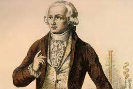
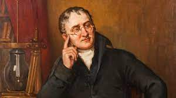
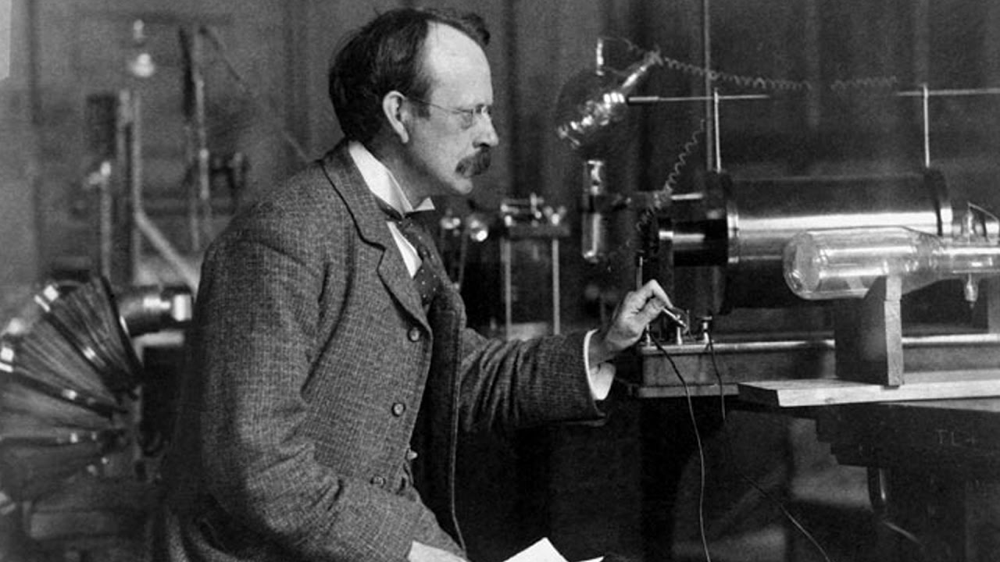
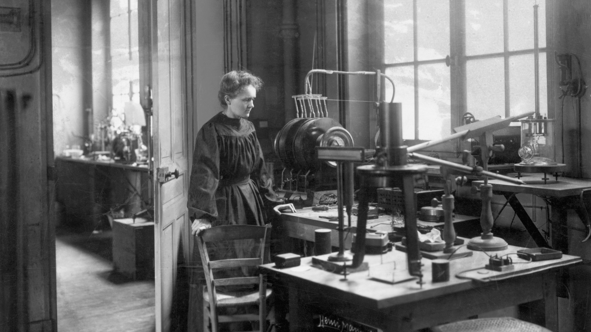
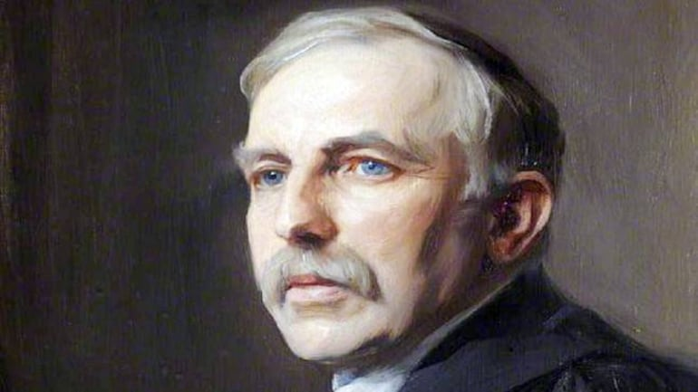
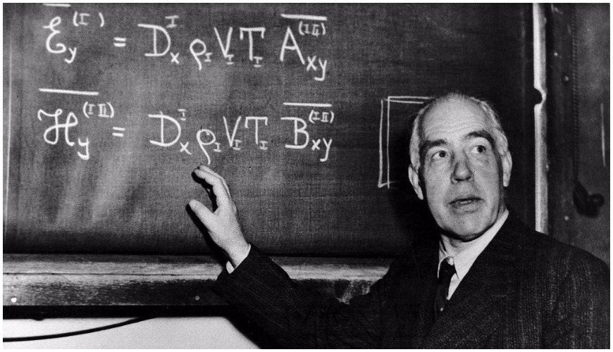

Isaac Newton
Born: 1643 Died: 1727 Nationality: British Isaac Newton created a modern perspective on atoms and interatomic forces. He realized that heat is the motion of molecules and heat is created when a molecules potential energy is translated into kinetic energy as they move together. His laws of motion also state the following: all objects will continue to move in a straight line forever, unless there is a force that stops it or changes its direction, force equals mass times acceleration, and for every action there is an equal and opposite re-action. Technology Available at that Time: Newton used telescopes and prisms, as well as eating apples.Robert Boyle
Born: 1627 Died: 1691 Nationality: Anglo-Irish Robert Boyle discovered that the volume of gas changes by the amount of pressure applied to the gas. He also discovered that sound does not pass through a vacuum. He also defined elements as simple substances that could not be broken down into any other substance. He had created a definition for elements, so he set out looking for elements, but decided that no true ones had been discovered yet. Technology Available at that Time: Boyle used a vacuum pump, vacuum tubes, different types of gases and mercury.

Antoine Lavoisier
Born: 1743 Died: 1794 Nationality: French Antoine Lavoisier discovered carbon by realizing that there was no difference in weight if he burned a diamond or a piece of charcoal. He discovered the role that the element Oxygen has in combustion by burning mercury oxide and realizing that it released oxygen. He also discovered that oxygen makes up 20% of the air and was important for breathing. Another of his discoveries was that combustion and respiration are the same. He also discovered the element of sulfur by making experiments that showed it could not be broken down. Another of his discoveries was that water is not an element because it can be created by burning hydrogen and oxygen. Technology Available at that Time: Lavoisier used magnifying glasses, a distiller, bell jars, and flasks.

John Dalton
Born: 1766 Died: 1844 Nationality: British John Dalton discovered that everything is made of small particles called atoms, and atoms cannot be created, destroyed or divided. He also discovered that atoms of the same element are identical but are different from atoms of other elements and that compounds get created when different atoms join in fixed proportions. Technology Available at that Time: Dalton used the balance, pieces of chemistry glassware, and a manometer. He also used microscopes and an older version of The Periodic Table.

J.J. Thomson
Born: 1856 Died: 1940 Nationality: British J.J. Thomson discovered that all currents are made of negatively charged particles, AKA electrons, which he interpreted to mean that atoms must contain those particles. His hypothesis was that atoms must contain even smaller particles. He created a model of the atom with the electrons stuck in the atom, but this was changed by a different scientist to create the model we have today. Technology Available at that Time: Thomson used gas discharge tubes and vacuum tubes as well as microscopes.
Marie Curie
Born: 1867 Died: 1934 Nationality: Polish Marie Curie isolated different substances by chemical reactions to discover the elements Polonium and Radium as well discovering that Radium could help destroy tumorous cells. She also created the word “radioactivity” after she discovered that certain elements were radioactive. She discovered radioactive decay which is when an unstable nucleus loses its energy. Technology Available at that Time: Curie used her husband’s electrometer and balances.
Ernest Rutherford
Born: 1871 Died: 1937 Nationality: New Zealander Ernest Rutherford designed an experiment to probe inside atoms. He took a thin sheet of gold and exposed it to a stream of high speed positive alpha particles, which acted like tiny bullets. He placed a detector screen around the gold so that every time an alpha particle hit the screen it would become visible. His experiment showed that most of the alpha particles went through the gold without getting affected, and this was expected. However, some particles rebounded from the foil and this was the discovery of the nucleus, a small dense center of the atom. This allowed Rutherford and us to look inside the atom for the first time. Later, he discovered that there were two particles inside an atom, positive protons and neutral neutrons. Technology Available at that Time: Rutherford used florescent screens made of zinc, a particle emitter and gold foil.
